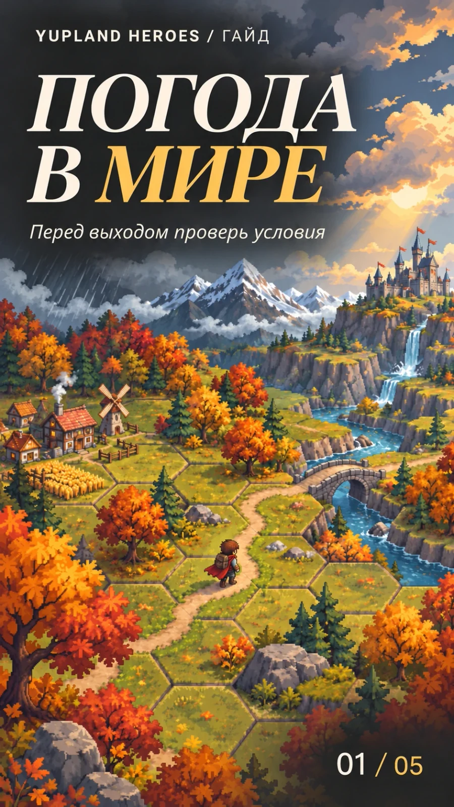
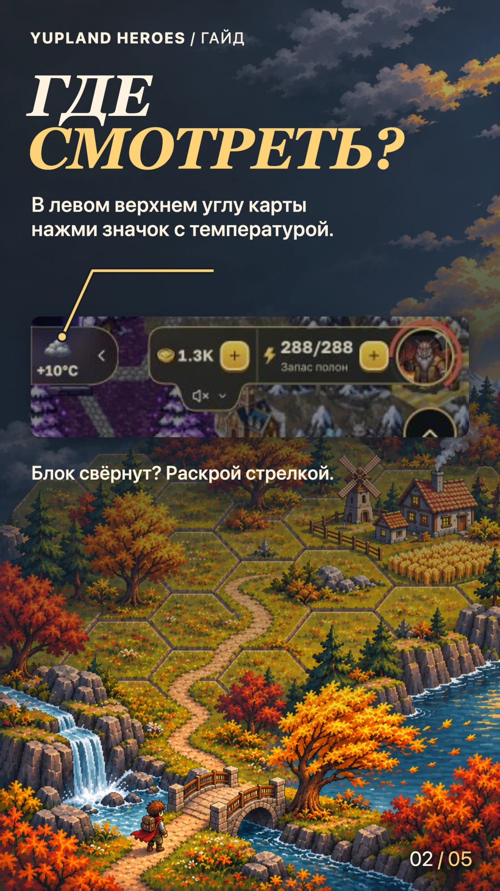
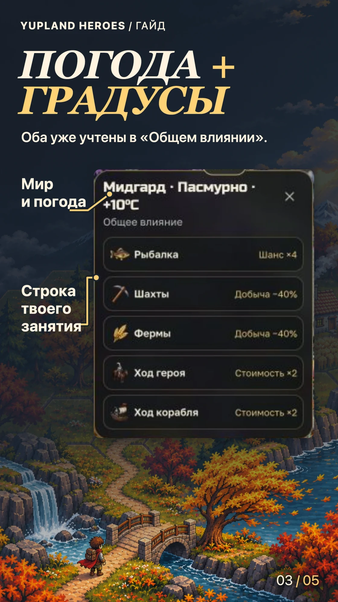
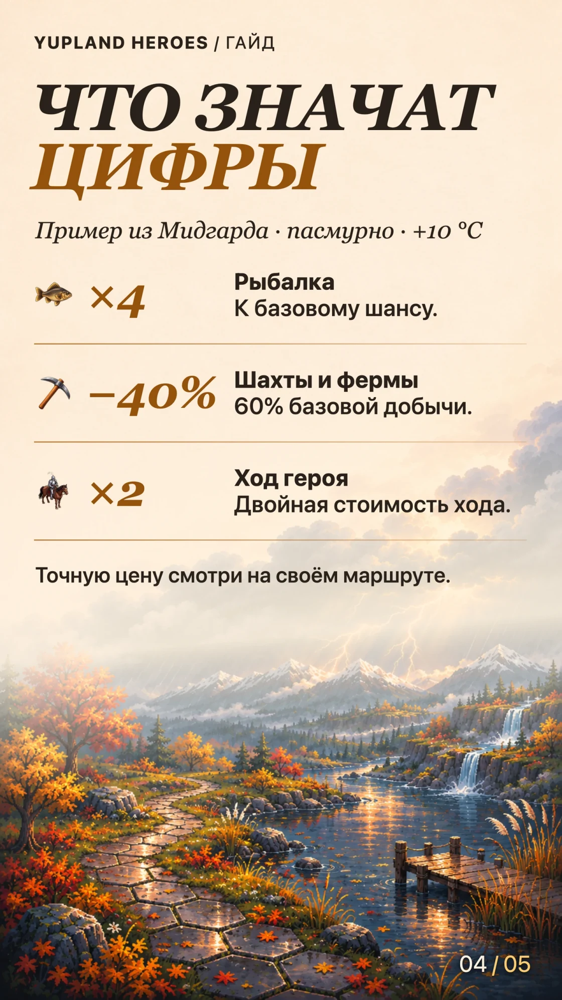
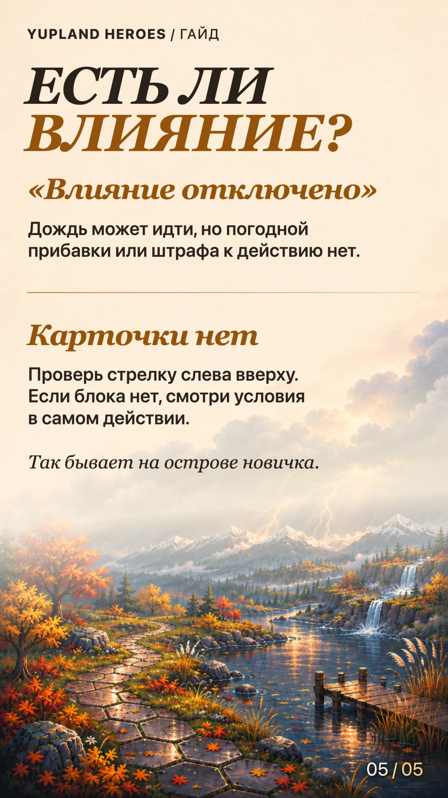

Погода в мире. Что проверить перед вылазкой
-
Обложка 
-
Шаг 01 
-
Шаг 02 
-
Шаг 02 
-
Шаг 03 
Одна и та же погода может повысить шанс на рыбалке и сделать дорогу дороже. Перед вылазкой открой карточку и посмотри строку своего занятия.
Открой карточку
Слева вверху карты нажми значок погоды с температурой. Если блок свёрнут, раскрой его стрелкой. В заголовке карточки указаны мир, погода и температура. После перехода в другой мир проверь карточку заново.
Найди строку своего занятия
«Общее влияние» уже учитывает погоду и температуру. Прочитай нужную строку. Для рыбалки смотри шанс, для шахт и ферм — добычу, для героя или корабля — стоимость хода. Отдельно прибавлять поправку за градусы не нужно.
В примере из Мидгарда «Шанс ×4» относится к базовому шансу рыбалки, «Добыча −40%» оставляет 60% базовой добычи шахт и ферм, а «Стоимость ×2» удваивает базовую стоимость хода. Если собираешься в дорогу, построй маршрут и проверь итоговую цену по подписи у цели. Пример расчёта на одной соте.
Проверь, действует ли погода
«Влияние отключено». Погода на карте может оставаться видимой. Для показанных действий используются стандартные значения погодного влияния.
Карточки нет. Проверь стрелку слева вверху. Если блока нет, как бывает на острове новичка, ориентируйся на цену и условия в окне самого действия. Значения из другого мира для этой карты не подходят.